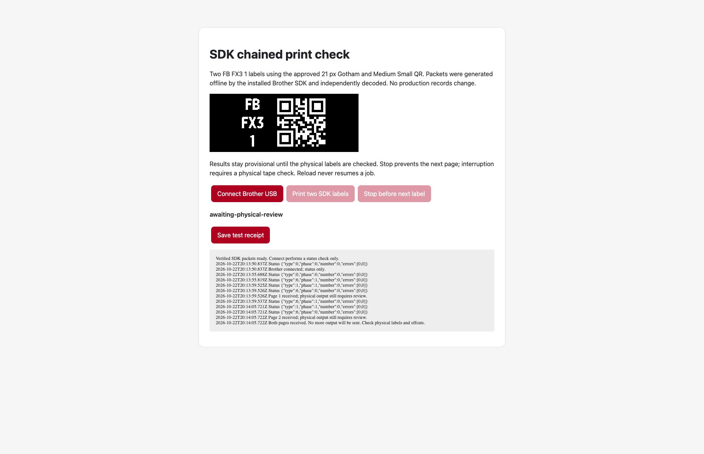
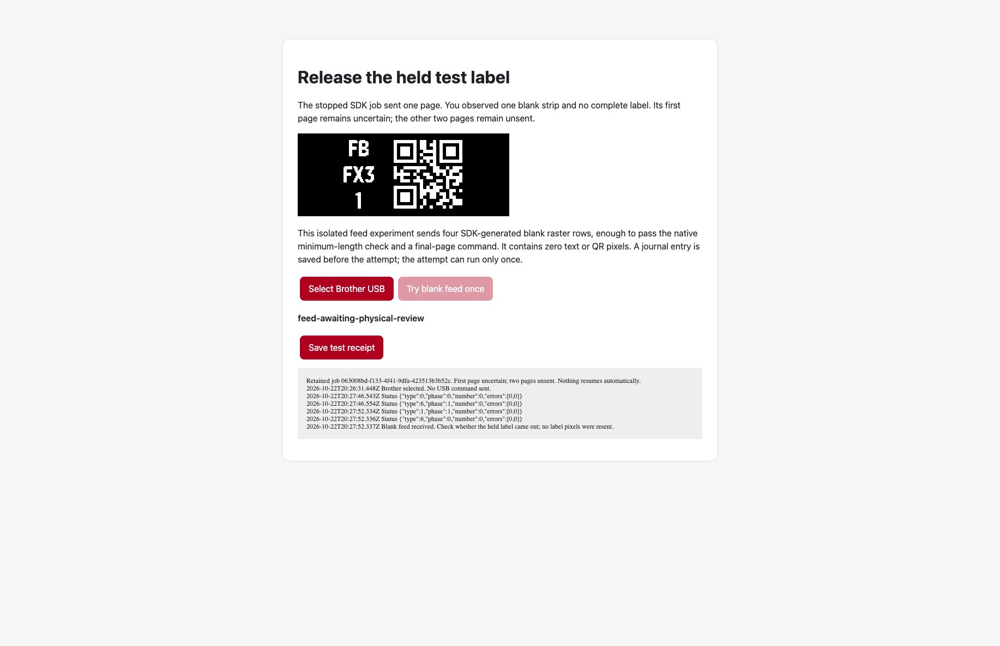
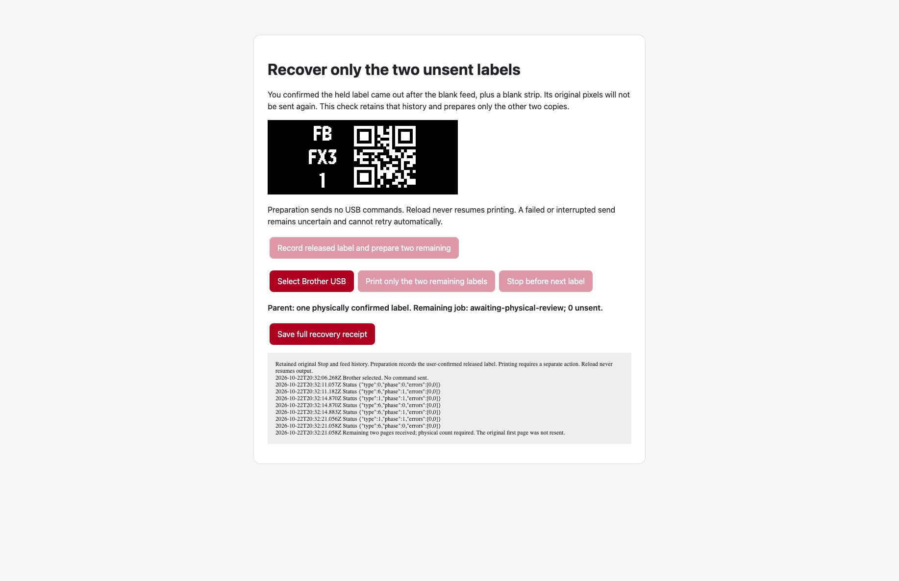

Exact Gotham/Medium Small pixels are unchanged. These captures show an isolated hardware probe, not a product UI comparison. Physical counts below come from the user.
The user confirmed two good labels and one initial blank, with no blank strip between labels. Both pages received printing→receive confirmations. The receipt stayed provisional until that physical answer.

After-only USB receipt before the user confirmed the physical count.Only the first of three pages was sent. Stop sent no additional content, feed or cancel. The user observed one blank and no complete label. A separately recorded SDK feed subsequently released that held label plus a blank strip, as the user confirmed. No text or QR pixels were resent.
This screenshot precedes the separate successful feed. Automatic product integration remains pending.The user confirmed one good FB FX3 1 label plus one blank strip after a separately journaled four-row zero-ink SDK final feed. The original label pixels were not sent again.

The recovered child contains only original source copies 1 and 2. Reload retained it as prepared and sent nothing. Both page transitions later arrived; the user's physical count is pending.

All SDK raster bytes independently decode to the approved image and QR. Nine transport safety cases plus page lifecycle cases pass. macOS denied live debugger attachment, so these are generated SDK commands, not a live P-touch capture. No security settings changed.
The helper's 26 source/test files still match the pre-chain snapshot. Its default printing, journal and recovery remain unchanged. The four-blank-row SDK feed was sent once and physically released the held label. Remaining-only recovery received both page transitions after a no-output reload; its physical count is pending.
Evidence details · Raw batch receipt · Raw Stop receipt · Physical observations